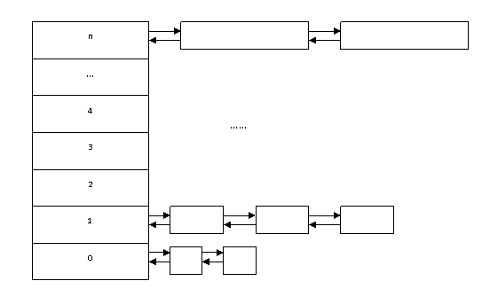

在程序运行过程中，有很多数据需要保存在一个地方，然后再对数据进一步处理。比如读文件，网络数据传输与接收，凡是有数据需要处理的地方，都离不开为这些数据分配一段合适的内存。
内存分配，主要分为两种：一是在栈上分配内存；一是在堆上分配。本章将详细介绍内存分配相关的知识。
大家已经知道，在C程序中，能存放数据的地方包括：静态区，栈，堆。其中全局变量，静态局部变量以及常量字符串都存储在静态区。而函数内的局部变量则分配在栈上。通过malloc()函数分配的内存则来自于堆上。
9.1.1栈上分配
即在函数内部定义局部变量，就是在栈上分配内存。占内存大小是有限制的，不能超过栈的大小，否则会造成栈的溢出。
void func()
{
int Number[1024]={0};//Number数组从栈上分配内存
}
栈上分配的内存系统会在函数运行结束后自动回收。
Windows在应用层的栈大小为1M，而Linux在应用层的大小为10M。那就意味着在Windows的应用层分配的栈空间大小不能超过1M，Linux栈上分配的栈空间不能超过10M。
9.1.2堆上分配
通过malloc（）函数分配的内存即为堆上的内存。比如：
int *p=(int *)malloc(1024*sizeof(int));
堆上的内存系统不会自动回收，需要程序员亲自释放。使用free()函数可以释放堆上分配的内存，释放调用方式如下：
free(p);
当调用free()把p所指堆上的内存释放（回收）之后，p指向了一个无效内存地址，成为了野指针，所以需要重新将p置为NULL，如下：
p=NULL;
9.1.3静态区分配
全局变量或者静态局部变量的内存空间是从静态区分配的内存，比如定义如下的全局变量：
int g_iNumber[1024]={0};
则g_iNumber就是在静态区获取内存。静态区获取的内存不需要自己释放，系统会在程序退出的时候自动回收。
9.1.4堆与栈的区别
把数据存放在哪里比较好呢？栈上，还是堆上，还是静态区呢？这是一个问题。
首先，全局变量存放在静态区，在整个程序期间都有效，程序中所有函数也都可以访问，但是全局变量也有可能会造成名字冲突，也就是在一些复杂的项目中，各个模块由不同程序员开发，互不知道对方是否用了同样的全局变量，因此造成名字冲突，此外，全局变量也存在多线程安全问题。对全局变量的修改和访问需要做多线程安全考虑。因此，一个程序里不能有太多的全局变量。
除了全局变量(包括局部静态变量)存储数据是在静态区之外，剩下的就是用栈或堆来为数据分配存储的内存了。
举一个例子。写一个程序，接受用户的一个输入，然后把输入显示出来。那么用户输入的数据存放在什么地方呢？
首先可以把数据放在栈上，程序如下：
/*把数据存放在栈上*/
void main(void)
{
char buff[100] = {0};
scanf(“%s”, buff);
printf(“%s\n”, buff);
}
也可以把数据放在堆上，程序如下：
/*把数据存放在堆上*/
void main(void)
{
char *buff = (char *)malloc(100);
if(buff == NULL)
return;
memset(buff, 0, 100);
scanf(“%s”, buff);
printf(“%s\n”, buff);
free(buff);
}
那么，既然栈和堆都能存放数据，它们之间有什么区别呢？各自有什么优缺点呢？
1．首先从分配和释放的角度来看。栈空间由系统自动分配，比如在demo1里的char buff[100]，一旦声明了一个合理的空间，系统就会分配这么大的空间，但是对于堆内存来说，比如demo2中所分配的空间就必须由程序员明确调用malloc()函数来分配指定大小的空间。而用完之后，对于分配在栈上的空间来说，不需要明确的释放，便可以由系统负责回收，而在堆上分配的空间，必须要调用free()函数明确释放。
2．从生命周期来看。栈上的空间的生命周期就是函数执行的过程，一旦函数执行完成，那么栈上的空间就会被回收；而堆上的空间，不会因为函数的结束而被回收，必须在调用了free() 函数之后才回收。比如：
/*demo 1*/
char *getMemory()
{
char buff[100] = {0};
sprintf(buff, “%s”, “hello world”);
return buff;
}
/*demo 2*/
char *getMemory()
{
char *buff = (char *)malloc(100);
if (buff == NULL)
return NULL;
sprintf(buff, “%s”, “hello world”);
return buff;
}
在demo 1里，由于buff是栈上的空间，当getMemory()函数退出之后，就会失效。所以，把一段失效的空间返回给调用者使用，是错误的。不能将栈上的空间作为函数的返回值。而由于demo2中的buff是在堆上分配的，就不存在这个问题。但是对于demo2中返回的内存，调用者在使用完了之后，就必须进行内存释放，否则就会产生内存泄漏。
3．从分配大小的角度来看。在栈上分配的大小是有限制的，栈上分配空间的总大小不能超过程序的栈的最大值。大家知道，栈的空间是有限制的。在第2章提到，Windows在应用层的栈大小为1M，而Linux在应用层的大小为10M。那就意味着在Windows的应用层分配的栈空间大小不能超过1M，Linux栈上分配的栈空间不能超过10M。
比如下面的程序：
int main(void)
{
char buf[1*1024*1024] = {0};
int a = 0
return 0;
}
在程序中，buf的内存加上a的内存为1M+4个字节，已经超过了Windows栈上最大值的限制，所以发生了栈溢出。
而对于堆上分配的内存来说，大小受限于计算机系统中有效的虚拟内存。由此可见，堆获得的空间比较灵活，也比较大。
此外，一般来说，栈的增长方向是从高往低走，而堆上的内存增长方向是从低地址往高地址走。
int main(void)
{
int a = 0;
int b = 0;
char *p1 = (char *)malloc(1);
char *p2 = (char *)malloc(1);
printf(“&a = %p, &b = %p, p1=%p, p2=%p\n”, &a, &b, p1, p2);
return 0;
}
4．从分配效率角度来看。栈上的空间分配由系统自动分配，因此速度很快。而堆中的空间在分配过程中，会遍历该链表，寻找第一个空间大于所申请空间的堆结点，然后将该结点从空闲结点链表 中删除，并将该结点的空间分配给程序，因此堆分配的速度一般比较慢，而且还容易产生内存碎片。
从存放的数据角度来看。在栈空间里存放的数据为：形参，返回地址，老EBP，局部变量。而堆上分配的内存中存放的数据取决于程序员自己的意图，即放什么数据由程序员自己决定。
9.2内存管理：伙伴算法
平时，用得最多的是通过new/delete或者malloc/free来申请和释放内存。那么，操作系统中对内存的管理是如何进行的呢？下面介绍一个最常用的内存管理算法，即伙伴算法。伙伴算法对内存的组织如图所示：
图 伙伴算法内存管理
系统中的伙伴算法将内存所有的空闲页面分为N个块组。第K（0 =< K < N）组中块含2k个页面大小。每一组中块的大小是相同的，且同样大小的块形成一个双向链表。
假设要求分配的块的大小为256个页面。那么算法就在块大小为256个页面的块组中进行查找，看是否有这样一个空闲块。如果有，就直接分配；如果没有，该算法会查找下一个更大的块。如果在512大小的块组中找到一个，就将512分为两部分，一分用于分配，一分插入大小为256大小的块中。
其中把满足下面两个条件的块称为伙伴：
1．两个块大小相同；
2．两个块的物理地址连续。
伙伴算法将满足以上的两个块合并为一个块，如果合并后的块还可以跟相邻的块进行合并，那么该算法就继续合并。
伙伴算法的回收过程就是将系统释放的空闲块按照伙伴算法合并后插入相应的块组中。
void *malloc(unsigned int num_bytes) void *calloc(size_t n, size_t size) void *realloc(void *mem_address, unsigned int newsize)
malloc：
分配内存，空间不初始化为零
calloc:
在内存的动态存储区中分配n个长度为size的连续空间，函数返回一个指向分配起始地址的指针 ,内存空间初始化为零
realloc：
先判断当前的指针是否有足够的连续空间，如果有，扩大mem_address指向的地址，并且将mem_address返回，如果空间不够，先按照newsize指定的大小分配空间，将原有数据从头到尾拷贝到新分配的内存区域，而后释放原来mem_address所指内存区域（注意：原来指针是自动释放，不需要使用free），同时返回新分配的内存区域的首地址。即重新分配存储器块的地址。
内存碎片一般是由于空闲的连续空间比要申请的空间小，导致这些小内存块不能被利用，而形成内存碎片。
调用malloc函数时，它沿连接表寻找一个大到足以满足用户请求所需要的内存块。然后，将该内存块一分为二（一块的大小与用户请求的大小相等，另一块的大小就是剩下的字节）。接下来，将分配给用户的那块内存传给用户，并将剩下的那块（如果有的话）返回到连接表上。调用free函数时，它将用户释放的内存块连接到空闲链上。到最后，空闲链会被切成很多的小内存片段，如果这时用户申请一个大的内存片段，那么空闲链上可能没有可以满足用户要求的片段了。于是，malloc函数请求延时，并开始在空闲链上翻箱倒柜地检查各内存片段，对它们进行整理，将相邻的小空闲块合并成较大的内存块。
多次调用malloc（）后空闲内存被切成很多的小内存片段，这就使得用户在申请内存使用时，由于找不到足够大的内存空间，malloc（）需要进行内存整理，使得函数的性能越来越低。聪明的程序员通过总是分配大小为2的幂的内存块，而最大限度地降低潜在的malloc性能丧失。也就是说，所分配的内存块大小为4字节、8字节、16字节等。分配小而且生命周期很长的内存块时，才容易导致内存碎片的出现。
所以如果要动态分配的空间比较小，一般采取先分配一大块空间。然后在有内存分配需求时，从大块空间依次取出。
如果分配的空间很快就会释放（如分配释放同时在一个函数内），那么就不需要考虑内存碎片问题。
要避免内存分配中的碎片问题，一是尽量避免对malloc()函数的调用，能在栈上分配解决问题的，就不用malloc()来解决。
而在不得已非要频繁调用malloc()函数来分配内存的时候，就需要考虑内存池的技术了。内存池是池化技术中的一种，还包括连接池，线程池等。连接池用来解决频繁连接的问题，线程池用来解决频繁线程创建的问题，而内存池就是用来解决频繁内存分配产生内存碎片的问题。比如一开始直接用malloc申请一大段内存，做成一个内存池，然后再定义一组分配和释放接口对其进行管理，避免了频繁申请和释放内存。
tcmalloc:TCMalloc (google-perftools) 是用于优化C++写的多线程应用，比glibc 2.3的malloc快。这个模块可以用来让MySQL在高并发下内存占用更加稳定
tcmalloc就是一个内存分配器，管理堆内存，主要影响malloc和free，用于降低频繁分配、释放内存造成的性能损耗，并且有效地控制内存碎片。glibc中的内存分配器是ptmalloc2，tcmalloc号称要比它快。一次malloc和free操作，ptmalloc需要300ns，而tcmalloc只要50ns。同时tcmalloc也优化了小对象的存储，需要更少的空间。tcmalloc特别对多线程做了优化，对于小对象的分配基本上是不存在锁竞争，而大对象使用了细粒度、高效的自旋锁（spinlock）。分配给线程的本地缓存，在长时间空闲的情况下会被回收，供其他线程使用，这样提高了在多线程情况下的内存利用率，不会浪费内存，而这一点ptmalloc2是做不到的。
源码不需任何修改，tcmalloc会自动替换掉glibc默认的malloc和free
g++ test.cpp -ltcmalloc LINUX平台tcmalloc: Thread cached malloc
从堆上分配内存，如果不注意释放，就会产生内存泄漏。那么如何分配内存才符合科学的规范呢？下面来看一段内存分配算法：
char *pDest = (char *)malloc(4096);
free(pDest);
//下面是用typedef定义一个新结构最常用的定义形式
//在微软的面试中，在考查你某个算法前，一般会让你先定义一个与算法相关的结构。
//比如链表排序的时候，让你定义一个链表的结构。
typedef struct _node
{
int value;
struct _node * next;
}node, *link;
node *pnode = NULL; //声明变量都应该初始化，尤其是指针
pnode = (node *)malloc(sizeof (node)); //内存分配
//务必检测内存分配失败情况，程序健壮性的考查
//加上这样的判断语句，会让你留给面试官一个良好的印象
//不加这样的判断，如果分配失败，会造成程序访问NULL指针崩溃
if (pnode == NULL)
{
//出错处理，返回资源不足错误信息
}
memset(pnode, 0, sizeof(node)); //新分配的内存应该初始化，否则内存中含有无用垃圾信息
pnode->value = 100;
printf(“pnode->value = %d\n”, pnode->value);
node * ptmp = pnode;
ptmp += 1; //指针支持加减运算，但须格外小心
free(pnode); //使用完内存后，务必释放掉，否则会泄漏。一般采取谁分配谁释放原则
pnode = NULL;//释放内存后，需要将指针置NULL，防止野指针
动态分配的内存在程序结束后而一直未释放，就出现了内存泄漏。一般常说的内存泄漏是指堆内存的泄漏。堆内存是指程序从堆中分配的，大小任意的（内存块的大小可以在程序运行期决定），使用完后必须显示释放的内存。应用程序一般使用malloc，new等函数从堆中分配到一块内存，使用完后，程序必须负责相应的调用free或delete释放该内存块，否则，这块内存就不能被再次使用，就说这块内存泄漏了。
接着来分析下面的C代码：
void GetMemory(char *p)
{
p = (char *)malloc(100);
}
void Test(void)
{
char *str = NULL;
GetMemory(str);
strcpy(str, "hello world");
printf(str);
}
请问运行Test 函数会有什么样的结果？
分析：上面的代码试图使用指针作为参数，分配动态内存。该代码会存在两个问题：
1． 内存泄漏。
首先，通过指针作为参数无法成功申请一块动态分配的内存。这是因为，GetMemory()函数获得的是实参指针变量的一个拷贝。因此，它只是将新分配的内存赋给了形参（即实参指针的拷贝）。而实参并没有获得这块内存。在Test()函数中，发现并没有释放str指向内存的语句。但这不是内存泄露的根本原因。即使在程序后面加上一句：
free(str);
内存依然会泄漏。这是因为，str根本没有获得这块内存，而是由形参获得了。而形参是一个栈上的变量。在函数执行之后就已经被系统收回了。这是造成了内存泄漏的根本原因。
要想成功获得分配的内存，可以采用下面的两种方法：
char* GetMemory(void)
{
char *p = (char *)malloc(100);
return p;
}
上面的代码直接返回新分配的内存。由于内存是在堆上而不是在栈上分配的，所以函数返回后不存在任何问题。
或者传递指针的指针（二级指针）：
void GetMemory(char **p, int num)
{
*p = (char *)malloc(num);
}
这种方法是通过指针的指针来分配内存。用这种方法分配内存，传递给函数的是指针地址的一个拷贝，那么*p就是指针本身。因此新分配的内存成功的赋给了做实参的指针。
2． NULL指针引用导致程序崩溃。
由于str并没有获得这块内存，那么str的值依然为NULL，所以strcpy()函数访问了一个NULL指针，直接导致程序崩溃。
void GetMemory(char **p, int num)
{
*p = (char *)malloc(num);
}
void Test(void)
{
char *str = NULL;
GetMemory(&str, 100);
strcpy(str, "hello");
printf(str);
}
请问运行Test 函数会有什么样的结果？
分析：上面的代码使用指针的指针来分配内存，str会成功获得分配的内存。但是，该题在使用了指针后，却忘记了对内存的释放。所以应该在后面加上：
free(str); str = NULL;
内存泄漏本身影响并不大，一次普通的内存泄漏用户根本感觉不到内存泄漏的存在。真正影响大的是内存泄漏的堆积，这会最终消耗尽系统所有的内存。因此，在平时编码之时应该提高警惕，在使用完动态分配的内存之后，及时释放掉。
那么如何防止内存泄漏呢？内存分配应该遵循下面的原则：
1． 谁分配，谁释放。在写下new/malloc时，要马上写下配对的delete/free以此释放掉。
2． 出错处理需释放。在函数错误处理分支中，记得释放掉已经分配的内存。
3． 网络上拷贝的代码，要仔细检查内存使用情况，预防内存泄露。
比如下面的这段代码就忘记了在错误处理的地方释放前面分配的内存：
NTSTATUS QueryObjectName(HANDLE h)
{
int ret;
char *str = "Hello, how are u?";
char *pstr = NULL;
NTSTATUS st;
pstr = (char *)malloc(256);
if (pstr == NULL)
{
printf("No more memory\n");
return;
}
strncpy(pstr, str, strlen(str));
pstr[strlen(str)] = '\0';
char *namebuf = (char *)malloc(1024);
//注意下面的出错处理代码，忘记了释放pstr所指内存资源
if (buf == NULL)
{
printf("No more memory\n");
return;
}
st = NtQueryObject(h, FileNameInformation, namebuf, ret, NULL);
//注意下面的出错处理代码，忘记了释放pstr和namebuf所指内存资源
if (!NT_SUCCESS(st))
{
return st;
}
...
free(buf);
free(pstr);
return st;
}
下面的代码在出错处理的地方增加了内存释放的代码，防止了内存的泄漏。
NTSTATUS QueryObjectName(HANDLE h)
{
int ret;
NTSTATUS st = STATUS_UNSUCCESSFUL;
char *str = "Hello, how are u?";
char *pstr = (char *)malloc(256);
if (pstr == NULL)
{
printf("No more memory\n");
return st;
}
strncpy(pstr, str, strlen(str));
pstr[strlen(str)] = '\0';
char *namebuf = (char *)malloc(1024);
if (buf == NULL)
{
printf("No more memory\n");
//错误发生后，及时的释放了pstr内存
free(pstr);
return st;
}
st = NtQueryObject(h, FileNameInformation, namebuf, ret, NULL);
if (!NT_SUCCESS(st))
{
//错误发生后，及时的释放了buf与pstr的内存
free(buf);
free(pstr);
return st;
}
...
free(buf);
free(pstr);
return st;
}
为了应对这种复杂的出错处理逻辑，避免一不小心就忘记了释放分配的资源，可以采用出错处理模块化处理，在函数的尾部增加错误处理模块。一旦出错，就利用goto语句跳转到出错处理模块集中处理出错情况下资源的释放。
NTSTATUS QueryObjectName(HANDLE h)
{
int ret;
NTSTATUS st;
char *str = "Hello, how are u?";
char *pstr = (char *)malloc(256);
if (pstr == NULL)
{
printf("No more memory\n");
goto Error;
}
strncpy(pstr, str, strlen(str));
pstr[strlen(str)] = '\0';
char *namebuf = (char *)malloc(1024);
if (buf == NULL)
{
printf("No more memory\n");
goto Error;
}
st = NtQueryObject(h, FileNameInformation, namebuf, ret, NULL);
if (!NT_SUCCESS(st))
{
printf("No more memory\n");
goto Error;
}
...
Error:
//发生错误后，统一处理内存释放问题
if (buf)
{
free(buf);
}
if (pstr)
{
free(pstr);
}
return st;
}
此外，还可以用SHE __try__leave__except结果化异常处理机制来处理系统中的异常的发生时资源的释放。
NTSTATUS QueryObjectName(HANDLE h)
{
int ret;
NTSTATUS st;
char *str = "Hello, how are u?";
char *pstr = (char *)malloc(256);
__try
{
if (pstr == NULL)
{
printf("No more memory\n");
__leave;
}
strncpy(pstr, str, strlen(str));
pstr[strlen(str)] = '\0';
char *namebuf = (char *)malloc(1024);
if (buf == NULL)
{
printf("No more memory\n");
__leave;
}
st = NtQueryObject(h, FileNameInformation, namebuf, ret, NULL);
if (!NT_SUCCESS(st))
{
printf("No more memory\n");
__leave;
}
}
__except(EXCEPTION_EXECUTE_HANDLER)
{
st = GetExceptionCode();
}
if (buf)
{
free(buf);
}
if (pstr)
{
free(pstr);
}
return st;
}
为了管理使用复杂的指针申请的内存的释放,可以利用智能指针或者利用引用计数的方式来管理申请到的内存。下面介绍一下引用计数的方法：
引用计数方式来管理内存，即在类中增加一个引用计数，跟踪指针的使用情况。当计数为0了，就可以释放指针了。此种方法适合于通过一个指针申请内存之后，会经过程序各种复杂引用的情况。
下面是一个实际例子：
class CXData
{
public:
CXData()
{
m_dwRefNum = 1; //引用计数赋初值
}
ULONG AddRef() //增加引用
{
ULONG num = InterlockedIncrement(&m_dwRefNum);
return num;
}
ULONG Release() //减少引用
{
ULONG num = InterlockedDecrement(&m_dwRefNum);
if(num == 0) //当计数为0了，就释放内存
{
delete this;
}
return num;
}
private:
ULONG m_dwRefNum; //引用计数
}
使用实例：
CXData *pXdata = new CXData; pXdata->AddRef(); //使用前增加计数 pXdata->Release(); //使用后减少计数，如果计数为零，则释放内存
如果内存已经发生了泄漏，有什么方法来检测内存的泄漏呢？比如设计一个方法，来实现跨平台的内存泄漏检测：
方法就是定义一个自己的内存分配与释放的函数：
1，char *mymalloc(n)
{
char *p = (char *)malloc(n);
v.push_back(p);
return (void *)p;
}
当调用malloc（）函数分配好了内存后，将p放入一个容器（比如C++里的vector就是一个容器）里。
2，void myfree(p)
{
v.pop_back(p);
free(p);
}
在释放内存的时候，将该指针从这个容器里删除。这样当程序退出的时候，如果容器v里非空，那么一定是发生了内存泄漏。
3，void myrealloc(p,size)
{
void *p1 = realloc(p,size);
if(p1==p)
{
}
else
{
v.pop_back(p);
v.push_back(p1);
}
return p1;
}
对于realloc()函数需要做特殊处理，因为realloc()函数返回的指针可能是输入的指针，也可能是重新分配的内存指针。如果是输入的指针，则不用再加入容器；否则需要删除之前放入容器的指针，把新的指针放入容器中。
本页共470段，13658个字符，25427 Byte(字节)